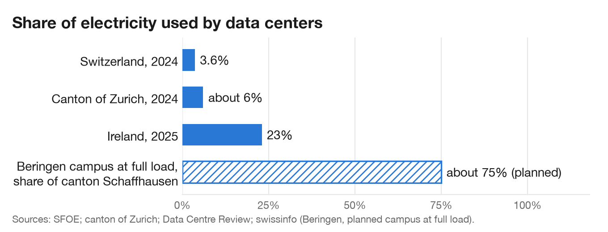
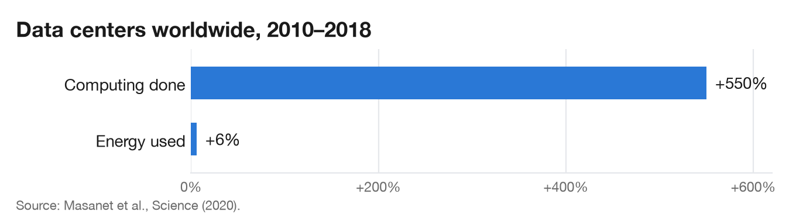
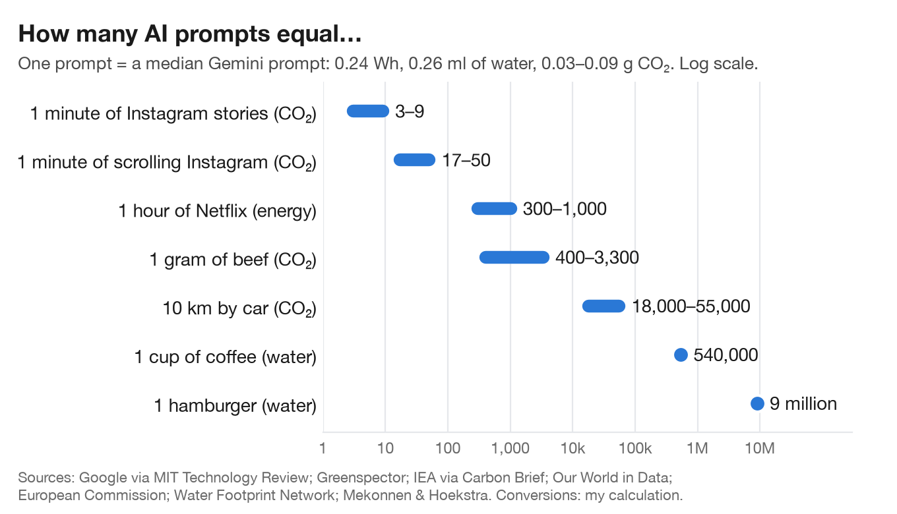
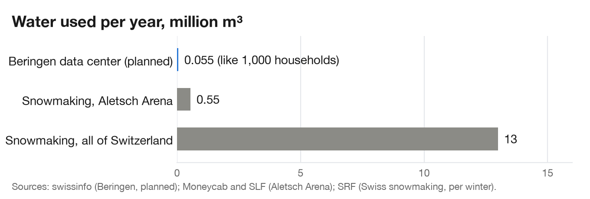
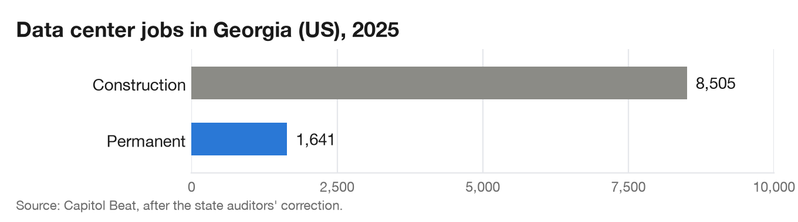

Do data centers drain our water and power?
In summer 2026, activists set up a protest camp near a planned data center in Beringen, Schaffhausen (swissinfo). In the US, 71% of people oppose an AI data center near their home; among opponents, 18% name water as their main concern (Gallup, 2026).
Are these fears justified? Let's look at electricity, water, heat and jobs.
How much electricity?
Swiss data centers used 2.1 TWh in 2024, 3.6% of national consumption; the SFOE expects 2.5–3.2 TWh by 2030 (Federal Council). The national average hides local clusters:

Beware of headline numbers. Before the SFOE study, the Zurich government quoted 6–8% of Swiss electricity for 2024 and 10–15% for 2030, about double what was then measured (Zurich cantonal government).
Compared with what?
Swiss data centers use almost as much electricity as all SBB trains, and more than ten times all Swiss ski areas (swissinfo). But the biggest new load on the Swiss grid will be heat pumps and electric cars (SFOE). What sets data centers apart is speed: one campus can add tens of megawatts to a single substation in two or three years.
For a decade, efficiency kept up with demand:

Today it no longer does: in 2025, data center electricity demand grew by 17%, and by 50% for data centers dedicated to AI (IEA).
One prompt, in everyday terms
Per single use, AI is cheap. A median Gemini prompt uses 0.24 Wh, about one second of a microwave, and 0.26 ml of water, about five drops (MIT Technology Review). OpenAI gives 0.34 Wh for ChatGPT (Malay Mail).

Some caveats. Per-prompt figures come from the companies, exclude training, and grow for reasoning models and agents. Food water is mostly rain: counting only irrigation, a coffee still equals about 5,000 prompts (Revolve). And a chatbot hour that replaces a car trip lowers emissions; on top of it, it adds.
Water
- Withdrawal vs consumption. What matters is the water that evaporates. In a typical evaporative facility, that is about 74% of what is withdrawn (Pacific Institute).
- Direct vs indirect. In the US, about 75% of the water footprint of data centers is at power plants (Siddik et al., 2021). Company reports usually show only the on-site part.
- The "bottle per prompt". The original 2023 estimate was 500 ml for 10–50 responses, power-plant water included (ScienceBlog).

Most snowmaking water melts back into the valley in spring; water evaporated in a cooling tower is gone. The real issues are peaks, because water systems are sized for the hottest day (Han et al., 2026), and cooling choices: evaporative cooling saves electricity, closed-loop cooling saves water (Alston, Love & Haider).
Heat, jobs, land and air

| Concern | What the data says | Verdict |
|---|---|---|
| Heat | Reusing half of EU data-center heat could warm about 4 million homes (TNW); Zurich's first networks fed by data centers deliver from autumn 2026 | An opportunity, if networks come before homes switch to heat pumps |
| Land and grid | Beringen: 2.5 football fields (swissinfo) | Real locally |
| Air | Diesel backup generators linked to pollution in Virginia (Washington Post, via swissinfo) | Ask how often backups run |
Verdict
Exaggerated: a bottle of water per prompt, 15% of Swiss electricity, data centers as the main driver of new demand.
Legitimate: local peaks in power and water, few permanent jobs, a constant load through the Swiss winter, and efficiency gains that no longer keep up.
Each project should be judged on its peak water use, its winter power, who takes its heat, and how many people it employs.
Sources
- Federal Council / SFOE: Data centers in Switzerland, electricity consumption and efficiency potential (May 2026)
- Zurich cantonal government, answer to parliamentary question KR-Nr. 308/2025 (Dec. 2025)
- SFOE: Energy Perspectives 2050+, press conference slides (Nov. 2020)
- swissinfo: Why data centers are so controversial in Switzerland, in five charts (July 2026)
- swissinfo: Swiss tourism aims for record winter season despite energy crisis (2022)
- Gallup: Americans oppose data centers in their area (May 2026)
- TNW: The EU will rate data centres on energy and water from 2027 (Sept. 2026)
- IEA: Energy and AI, executive summary (2025)
- IEA: Data centre electricity use surged in 2025 (April 2026)
- JRC: Energy consumption in data centres and broadband communication networks in the EU (2024)
- Masanet et al., Recalibrating global data center energy-use estimates, Science (2020), via Axios
- MIT Technology Review: Google's energy use per Gemini prompt (Aug. 2025)
- CO/AI: Google reveals Gemini AI uses 0.24 watt-hours per query (Aug. 2025)
- Malay Mail: How much power does one AI prompt use? (Aug. 2025)
- DCD: Google reveals the data center energy used for each search (2009)
- Carbon Brief: Factcheck, what is the carbon footprint of streaming video on Netflix? (G. Kamiya, 2020)
- QualEnergia: Quanto consuma un'ora di streaming video? (IEA estimate by device)
- Netflix: The true climate impact of streaming (Carbon Trust study)
- Greenspector: The carbon impact of Instagram app features (2020)
- Our World in Data: Greenhouse gas emissions per kilogram of food product (Poore & Nemecek, 2018)
- European Commission: Report on the real-world CO₂ emissions gap for cars and vans (2024)
- European Commission: Real-world CO₂ emissions of cars and vans collected in 2022 (July 2024)
- ScienceDaily: Water Footprint Network launch, with product footprints (2008)
- ACTS: Virtual water, citing Mekonnen & Hoekstra (2012)
- Revolve: Does one cup of coffee really equal 140 litres of water?
- IDTechEx: Water usage in semiconductor manufacturing to double by 2035
- ScienceBlog: on the "bottle of water per email" estimate
- Siddik, Shehabi & Marston: The environmental footprint of data centers in the United States, Environmental Research Letters (2021)
- Pacific Institute: How much water do data centers use? (Sept. 2026)
- Alston, Love & Haider: Data center cooling choices shift water impacts across the grid, arXiv (Sept. 2026)
- Han, Li, Wierman & Ren: Small Bottle, Big Pipe, arXiv (2026)
- SRF: Technical snowmaking, how much water and electricity it needs (Jan. 2023)
- Moneycab: Interview with Aletsch Bahnen CEO Valentin König
- SATW Technoscope: Snowmaking (SLF research)
- Capitol Beat: Error in state auditors' data center review inflated job production (Jan. 2026)
- Quartz: Data center jobs and economic development
- Data Centre Review: Data centres consumed 23% of Ireland's electricity in 2025 (July 2026)